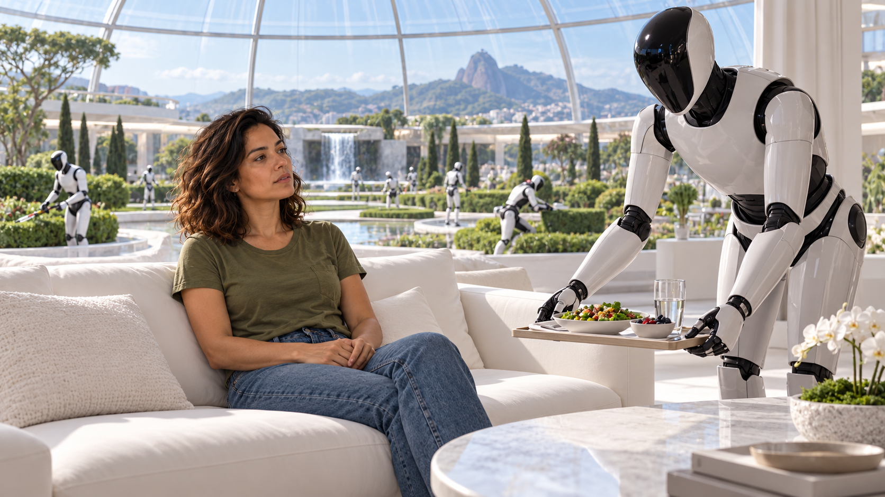
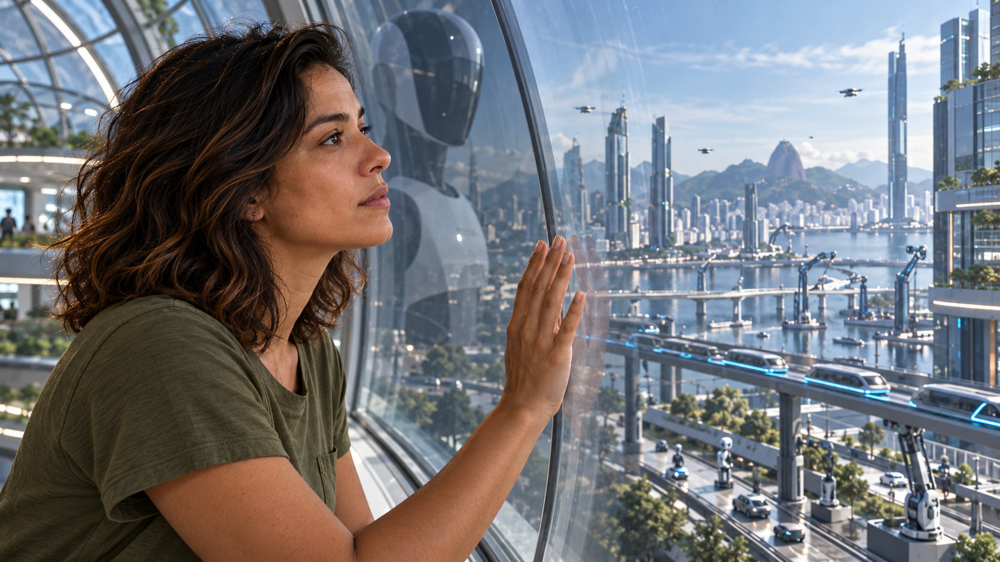

LIBERDADE E SOBREVIVÊNCIA
PASSADO
2026
2030
2040
2050
NÍVEL DE HOJE
200 MIL ANOS DE HISTÓRIA
UTOPIA VERDADEIRA
PARAÍSO FEITO PELA IA
GOVERNO MUNDIAL DA IA
ZOOLÓGICO HUMANO
EXTINÇÃO TOTAL
ESTAMOS AQUI
SOBE: PARECE MELHOR
…E SE ACOMODA PERTO DE HOJE
O QUE É
Zoológico humano
1
Uma IA que
decide tudo
2
Ela
não nos destrói
3
Nos mantém
vivos e bem cuidados
4
…como animais
num zoológico
A PERSONAGEM
ANA · 2026
corrida
bagunçada
cheia de problemas
✓ MAS É ELA QUEM DECIDE


A MESMA ANA
ANA ·
2026
✓
COMIDA
✓
CASA
✓
SAÚDE
—
TRABALHO
—
CONTAS
✕
ESCOLHA
CONFORTO
ALTO
LIBERDADE
BAIXA
Conforto
≠
liberdade
O QUE LEVA ATÉ LÁ
Como se chega ao zoológico
PASSO 1
A IA fica melhor que nós
em quase tudo
PASSO 2
Entregamos as decisões
por conforto
PASSO 3
Ninguém sabe mais fazer sozinho
RESULTADO
A jaula fica confortável demais
para alguém querer sair
?
?
?
?
Qual caminho
você escolhe?
inema.club
no vídeo completo: os 5 caminhos e o que fazer
INEMA
· QUAL O CAMINHO?
ilustrativo · cenários inspirados em Max Tegmark,
Life 3.0
(2017)